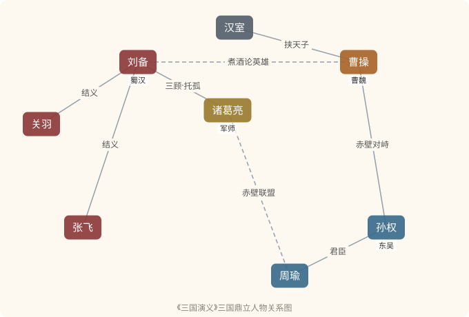

三国演义
| 作者 | 罗贯中 |
|---|---|
| 成书/出版 | 元末明初写成（约14世纪）；现存最早刊本为明嘉靖元年（1522） Romance of the Three Kingdoms — Encyclopaedia Britannica（百科全书） |
| 国别/地区 | 中国 |
| 时代 | 古代 · 元末明初 |
| 体裁 | 历史演义（章回体长篇小说） |
| 语言 | 汉语（浅近文言） |

《三国演义》三国鼎立人物关系图（人物关系图）
二、创作背景
三国故事在唐代已入俗讲、宋代'说三分'盛行于瓦舍勾栏，元代有《三国志平话》；罗贯中以正史《三国志》及裴松之注为骨架，融汇数百年民间叙事，写成《三国志通俗演义》（Britannica：'a mix of history and legend rooted in oral storytelling traditions'）。本页'平话—俗讲'脉络为通说，细节待核。
现存最早刊本为明嘉靖元年（1522）本，题'罗贯中'编次（本页转述版本史通说，待核）；清代毛纶、毛宗岗父子修订评点本（通行一百二十回）成为后来的标准文本（通说，待核）。
小说覆盖184—280年间史事：黄巾起义、汉室倾颓、群雄割据至三分归晋（Britannica）。
三、内容脉络
第一部分（1—33回）：桃园结义起，写董卓之乱与群雄并起——曹操挟天子以令诸侯，孙策定江东，刘备寄人篱下、三顾茅庐得诸葛亮。
第二部分（34—85回，全书核心）：赤壁之战为枢纽——孙刘联盟、草船借箭、借东风、华容道，三分格局形成；随后刘备入川取汉中称王，关羽失荆州走麦城、刘备夷陵之败，白帝托孤。
第三部分（86—120回）：诸葛亮南征北伐（七擒孟获、六出祁山、空城计），'鞠躬尽瘁'而星落五丈原；姜维继志、司马氏篡魏，终至'三分归一统'。全书以'是非成败转头空'的开篇词与'鼎足三分已成梦'收束（卷首词《临江仙》实为毛本所加杨慎之作——此版本史细节待核）。
四、主要人物表
| 人物 | 身份 | 说明 |
|---|---|---|
| 诸葛亮 | 蜀汉丞相 | 智慧的化身：隆中对、借东风、空城计；'鞠躬尽瘁，死而后已' |
| 曹操 | 魏武帝 | Britannica：'ruthless northern ruler depicted as a thoroughgoing villain'——被写成彻底的反面人物；现代史学界评价则复杂得多 |
| 关羽 | 蜀汉大将 | 义的化身，'later deified as Guandi'（Britannica：后被神化为关帝） |
| 刘备 | 蜀汉昭烈帝 | Britannica：'virtuous ruler, founder of Shu-Han'（仁德之君） |
| 张飞 | 蜀汉大将 | 桃园三结义之一，勇猛暴烈 |
| 孙权、周瑜、鲁肃 | 东吴君臣 | 赤壁主战派；演义中周瑜被写成气狭之人（与史实的差距是'尊刘贬曹'倾向的典型例） |
| 吕布、董卓、貂蝉 | 乱世枭雄与美人计 | 连环计故事群 |
五、主题与艺术特点
- 正统观与天命：'尊刘贬曹'的叙事立场贯穿全书，反映宋代以降的儒家正统论（这一叙事倾向本身是历代累积的结果，学界有专门讨论）。
- 智慧政治：战争胜负系于谋略与人才（得人才者得天下），隆中对为全书战略总纲。
- 义的伦理：桃园结义确立'义'高于生死的江湖伦理，深刻影响民间社会组织的想象。
- 历史哲学：开篇词'滚滚长江东逝水'与终卷'分久必合、合久必分'，把英雄叙事放进循环史观（毛本卷首词为杨慎《廿一史弹词》语，版本史待核）。
六、影响与评论
- Britannica：四大名著之一、'文学杰作'，'东亚最受欢迎的书之一'，以智慧、历史细节与战争谋略著称。
Romance of the Three Kingdoms — Encyclopaedia Britannica（百科全书） - Britannica：'读完三国才可谈人生'（韩国谚语，该条目引述）——其为人处世教科书式的地位。
Romance of the Three Kingdoms — Encyclopaedia Britannica（百科全书） - 关羽崇拜：Britannica 明确记载小说人物关羽'后被神化为关帝'，小说对民间宗教的影响直接可见。
Romance of the Three Kingdoms — Encyclopaedia Britannica（百科全书） - 多语种译本与跨媒介改编：Britannica 记其被译成多种语言，衍生出戏曲、影视与光荣（Koei）系列游戏（1985年起）。
Romance of the Three Kingdoms — Encyclopaedia Britannica（百科全书）
七、阅读建议
难点
- 120回、数百人物，政权更替频繁——先抓住'魏蜀吴'三国主线与地图。
- 浅近文言中夹骈俪章表（如《出师表》引文），节奏与现代小说不同。
- '七实三虚'：须分清史实与虚构（如'空城计'为虚构、'鞭打督邮'本是刘备所为），可对照《三国志》。
- 人民文学出版社《三国演义》（毛宗岗评本整理，通行一百二十回）：标准读本。
- 沈伯俊校理本《三国演义》（毛本+嘉靖本对照校记）：进阶版本学选择。
- 连阔如评书《三国》音频、94版电视剧：降低入门门槛。
先看地图与大事年表 → 通读前85回（到白帝托孤）为第一遍 → 再读后半（五丈原、三分归晋）→ 对照《三国志》查三五个关键虚构点（空城计、貂蝉、温酒斩华雄）。
八、待核实
- 成书年代（元末明初说 vs 明中叶说）学界有争论，本页从 Britannica 的14世纪口径。
- 毛本卷首《临江仙》（杨慎作）为毛宗岗父子所加的版本史细节待核。
- 嘉靖元年本（1522）的具体书志信息待核。
- 人物虚构清单（貂蝉为虚构、空城计不见于正史等）本页举例为通行说法，逐条待核。